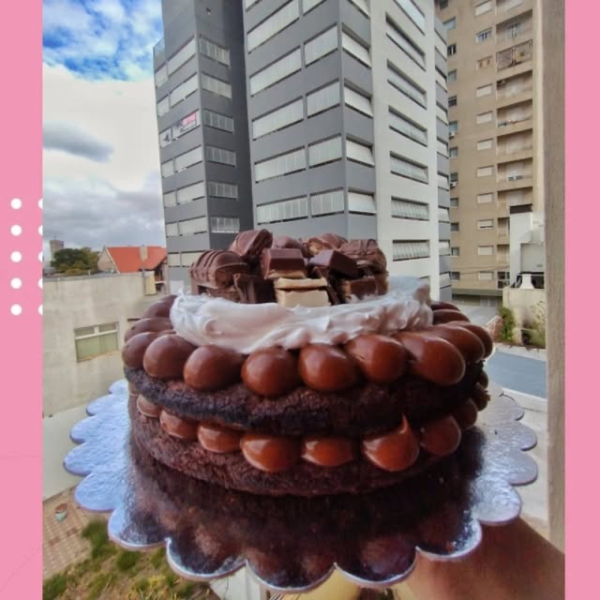
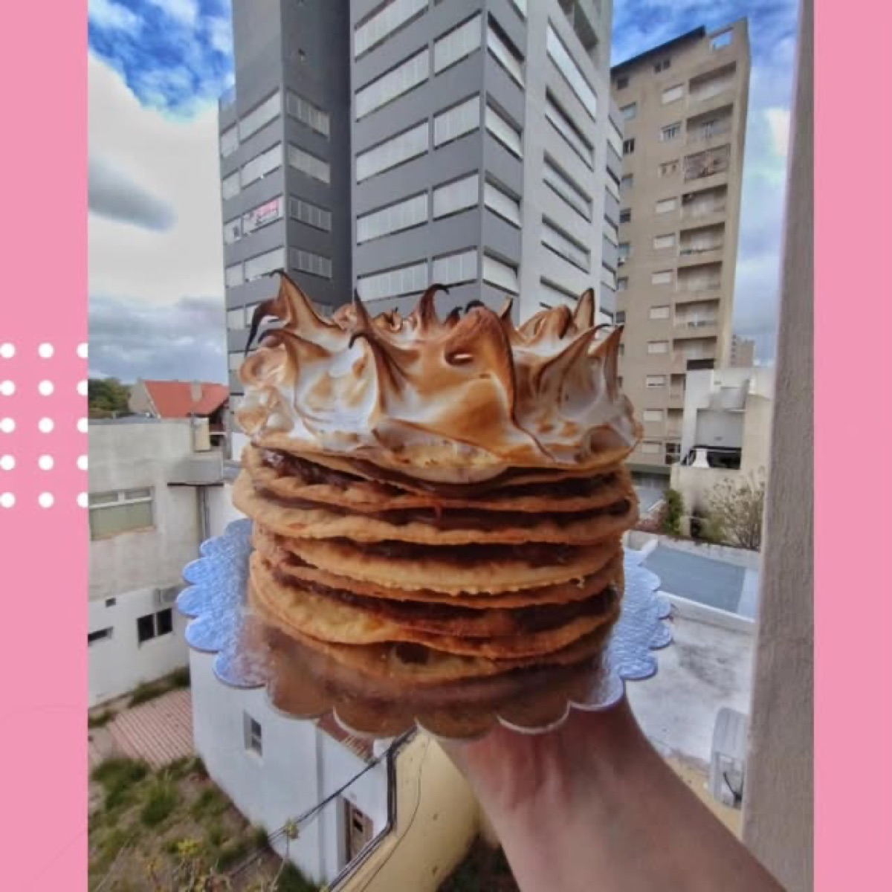
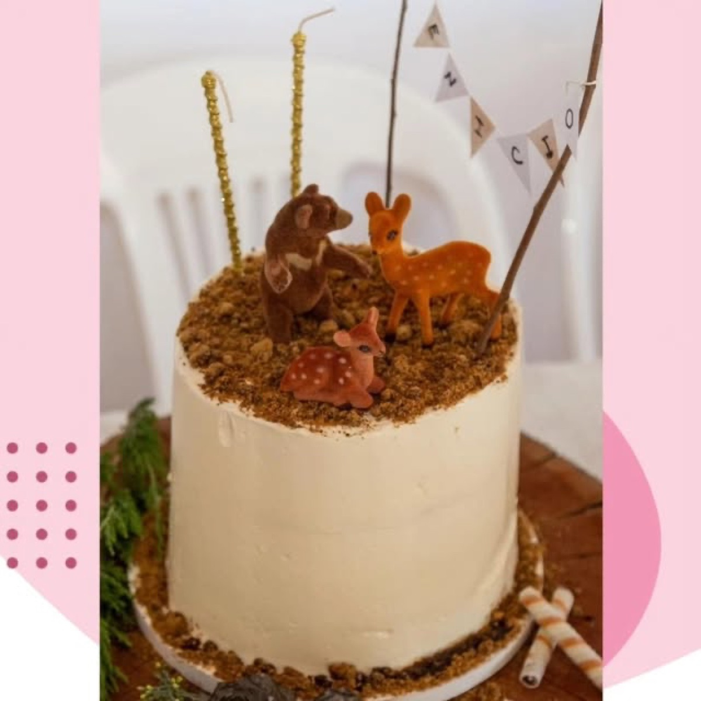
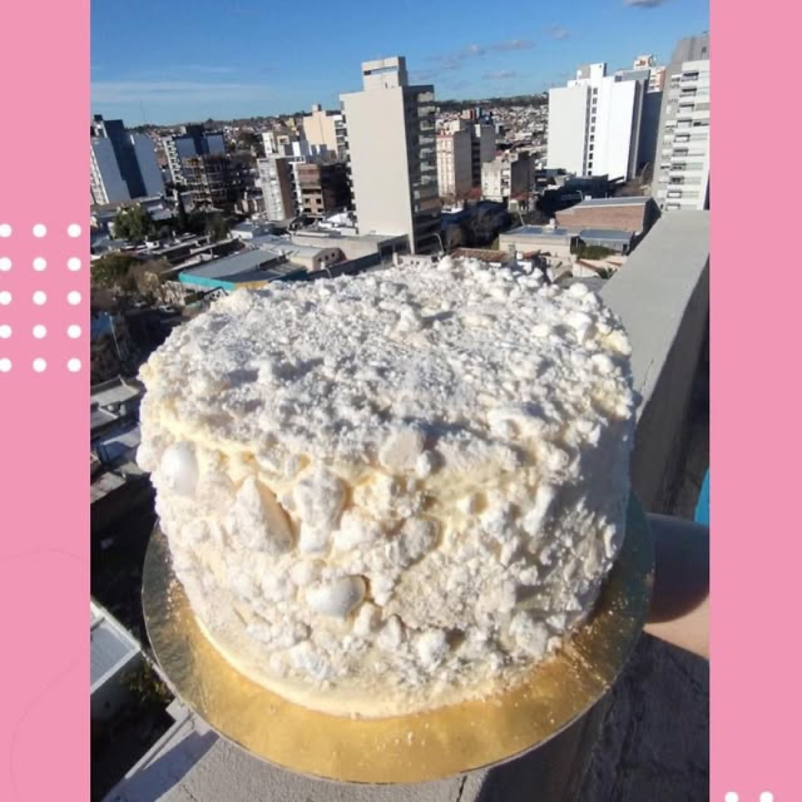
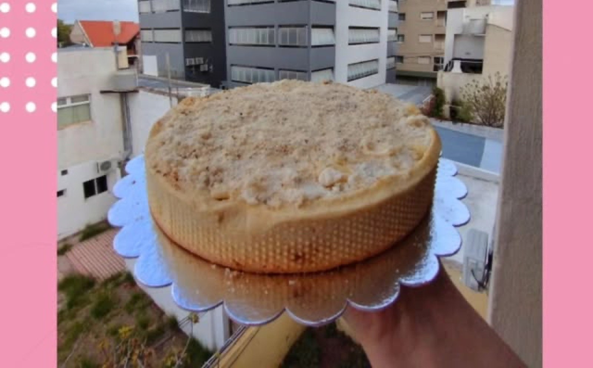
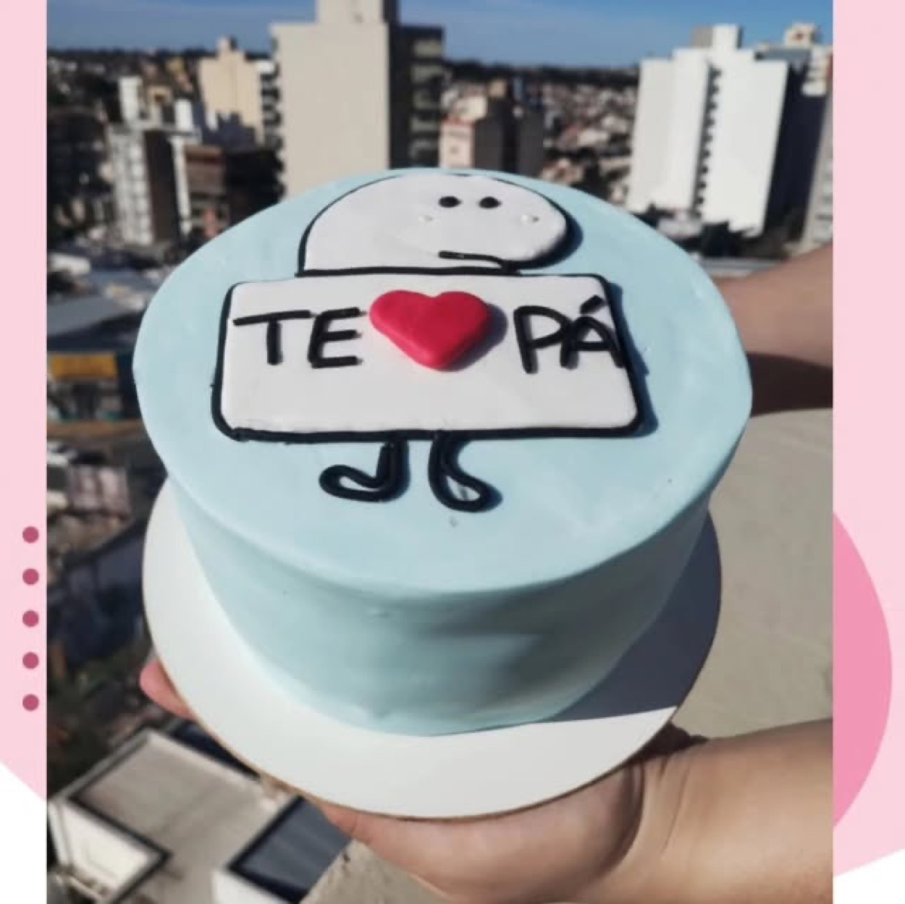

Tortas y dulces artesanales, hechos a mano
Horneo cada torta a mano en Bahía Blanca, con la misma dedicación con la que empecé en mi pueblo, Jacinto Aráuz.

Pedidos por recomendación en Jacinto Aráuz y Bahía Blanca
@lapueblerinasaboresLo que horneo para vos
Cada torta se arma a pedido: elegís el sabor, el relleno y la decoración, y yo me ocupo del resto.
Tortas temáticas para chicos
Cumpleaños con la temática que el peque sueña, de autos a superhéroes.

Creaciones a pedido
Ideas fuera de lo común, como esta torta de panqueques con merengue tostado.

Diseño a medida
Para festejos con una idea clara: contame la tuya.

Tortas especiales
Merengue, coco y otras texturas para quienes buscan algo distinto.

Dulces artesanales
Alfajores de maicena, budines y clásicos de toda la vida.

Tortas con mensaje
Para sorprender a alguien especial, con el mensaje que quieras.
Mirá más en Instagram
@lapueblerinasaboresAsí es un pedido con Fati
Del primer mensaje a la torta lista, en cuatro pasos.
Contame la idea
Escribime por WhatsApp con la fecha, la cantidad de personas y el estilo que tenés en mente.
Cotización y seña
Te paso el presupuesto y coordinamos una seña para reservar la fecha.
Horneo con cuidado
Preparo todo de forma artesanal, con ingredientes frescos y tiempo.
Retiro o entrega
Coordinamos el retiro en Bahía Blanca o el envío según la zona.
De Jacinto Aráuz a cada torta que sale de mi cocina
La Pueblerina empezó mucho antes de tener un nombre, hace más de diez años, cuando di como souvenir en mis 15 un frasco con masitas caseras. En el pueblo me empezaron a decir Fati la Cocinerita: los fines de semana, con ayuda de mi mamá, horneábamos pancitos saborizados que eran furor.
En 2022 dejé Jacinto Aráuz para mudarme a Bahía Blanca y profesionalizarme. Extrañé mi casa más de una vez, pero también encontré más ganas de aprender. Con los años llegaron las tortas, los alfajores, los muffins y los pedidos, hasta que todo eso se convirtió en La Pueblerina Sabores.
Esa nena que empezó haciendo unas galletitas para su cumpleaños nunca dejó de intentarlo. Y eso es La Pueblerina para mí.
Fátima Boscardín, La Pueblerina
Leer la historia completa
La Pueblerina comenzó mucho antes de tener un nombre. Comenzó hace 7 años, cuando di como souvenir en mis 15 un frasco con masitas caseras. No sabía demasiado. No tenía todo lo que tengo hoy, ni imaginaba hasta dónde podía llegar eso que estaba haciendo en mi cocina.
En el pueblo me empezaron a conocer como Fati la Cocinerita. Mis pancitos saborizados eran furor y con ayuda de mi mamá todos los fines de semana realizamos decenas de ellos. Probé recetas, me equivoqué, volví a intentar, hice cosas que no salieron como esperaba y otras que me hicieron sentir orgullosa. Fui aprendiendo de a poquito, siempre con las ganas de que la próxima saliera un poquito mejor.
Hasta que llegó el 2022. Con 17 años tuve que hacer una de las cosas más difíciles: dejar mi pueblo, Jacinto Aráuz, y mudarme a Bahía Blanca para estudiar y poder profesionalizarme. Dejé mi casa, mi familia, mis amigos y esa vida que conocía. Y aunque estaba cumpliendo un sueño, hubo días en los que extrañé muchísimo estar en casa. Días en los que necesitaba un abrazo de mi familia, una charla con mis amigas, volver por un rato a ese lugar donde todo era familiar.
Pero también encontré algo en ese camino. Encontré más ganas de aprender, personas que se volvieron súper importantes para mí, más recetas, más errores, más intentos. Y cada vez un poquito más de certeza de que esto era lo que quería hacer.
Con los años llegaron las primeras tortas, los alfajores, los muffins, las cookies, los pedidos y todas esas horas detrás de una mesada intentando que cada cosa tuviera un poquito de mí. Y así nació La Pueblerina Sabores.
Hoy, cuando preparo un pedido, muchas veces pienso en aquella chica de 15 años haciendo galletitas para su cumpleaños sin imaginar todo lo que vendría después. No sabía que esas primeras galletitas iban a ser el comienzo de algo tan importante para mí. No sabía que algún día iba a estudiar aquello que tanto me gustaba. No sabía que iba a dejar mi pueblo para perseguir ese sueño. Y mucho menos sabía que años después iba a estar acá, preparando cosas con mis propias manos y llamándolas La Pueblerina.
Todavía me queda muchísimo por aprender. Todavía hay recetas que salen mal, días en los que dudo y momentos en los que siento que podría hacerlo mejor. Pero miro hacia atrás y me doy cuenta de algo: esa nena que empezó haciendo unas galletitas para su cumpleaños nunca dejó de intentarlo. Y eso es La Pueblerina para mí. No solamente un emprendimiento. Es una parte de mi historia. De mi pueblo. De mi familia. De todo lo que dejé atrás para crecer. Y de todo lo que todavía sueño construir.
Gracias a quienes eligen un pedacito de mi historia cada vez que eligen La Pueblerina.
Preguntas frecuentes
¿Con cuánta anticipación tengo que encargar?
Depende de la fecha y de la complejidad del pedido. Contame qué estás festejando y coordinamos los tiempos por WhatsApp.
¿Hacen envíos?
El retiro es en Bahía Blanca. Los envíos y la entrega en Jacinto Aráuz se coordinan caso a caso.
¿Puedo pedir un diseño específico?
Sí, cada torta se arma a pedido. Contame tu idea, o mandame una foto de referencia, y vemos cómo hacerla.
¿Cómo se reserva la fecha?
Con una seña que coordinamos por WhatsApp una vez que confirmamos el pedido.
¿Para cuántas personas rinde cada torta?
Varía según el tamaño y el tipo de torta. Contame cuántos son y te sugiero la opción que más conviene.